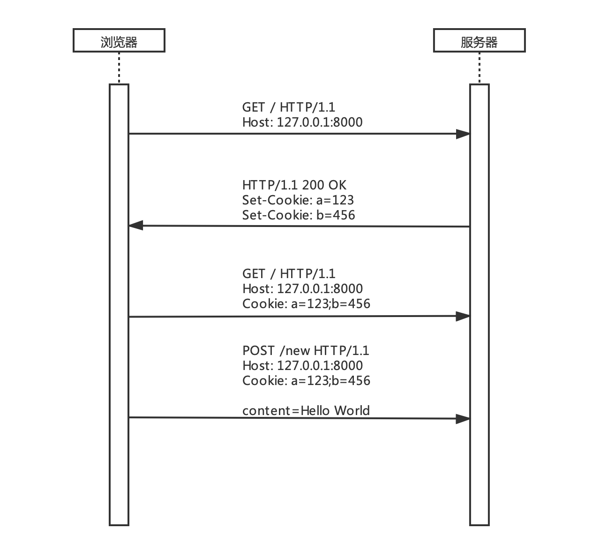

用户登录原理 用户登录与注册功能几乎已成为 Web 应用的标配。所以我们有必要给 Todo List 程序增加一个用户管理模块，以此来学习用户登录原理。
HTTP 协议是无状态的，这意味着每个完整的 HTTP 请求 —— 响应过程都是相对独立的，Web 服务器无法分辨前后两次连续请求是否为同一个用户（客户端）发送过来的。为了让服务器能够记住用户，就有了一种叫作 Cookie 的技术。我画了一张图来描述 Cookie 的工作过程：

首先浏览器向服务器 / 路径发送了一个 GET 请求，服务器返回响应给浏览器时，在响应头中设置了两个键为 Set-Cookie 的响应首部字段，接下来浏览器收到 Set-Cookie 响应首部字段后会自动 将其保存下来，在之后的所有请求中浏览器都会自动 加上 Cookie 请求首部字段。
这就是 Cookie 的大致工作原理，总结起来 Cookie 有如下几个特点：
Cookie 需要服务器和浏览器共同配合使用，服务器通过 Set-Cookie 响应首部字段来设置 Cookie，并且可以同时设置多个 Set-Cookie 响应首部字段。浏览器收到 Set-Cookie 响应首部字段时，会自动 保存 Cookie 内容，在之后的请求中就会通过自动 加上 Cookie 请求首部字段来携带 Cookie 内容到服务器。Cookie 总是以键值对的形式存在，如 a=123、b=456，多个 Cookie 使用 ; 分隔。Cookie 并不限制请求方法，任何 HTTP 请求方法都可以使用 Cookie。出于安全考虑，Cookie 有域名限制。任何厂商的浏览器在保存 Cookie 时都会记录这个 Cookie 是属于哪个域名的，在给服务器发送请求时，只有这个域名下的 Cookie 才会被携带。如访问 127.0.0.1:8000 域名时浏览器就只会携带这个域名下的 Cookie，如果此时浏览器也保存了 www.jd.com 域名下的 Cookie，是不会被携带到 127.0.0.1:8000 服务器的。
Cookie 可以设置过期时间，像上图这样只设置了 Cookie 的键值为 a=123 这种情况，浏览器默认的处理机制是当浏览器关闭时自动删除这个 Cookie。如果需要设置过期时间则可以这样设置 Set-Cookie: a=123; Max-Age=60，此时 a=123 这条 Cookie 的过期时间就是 60 秒，60 秒后浏览器会自动将保存的这条 Cookie 删除。
如何在 Chrome 浏览器中查看 Cookie 呢？打开 Chrome 浏览器开发者工具，选择 Application 选项卡，点击 Cookies 就能看到当前域名下记录的所有 Cookie 信息。
Cookie
如果利用 Cookie 实现用户登录，那么流程大致如下：
浏览器访问 Web 应用的登录页面。
用户在登录页面输入用户名、密码，点击登录按钮进行登录。
服务器端收到浏览器传输过来的用户名、密码，然后到数据库中查找是否存在这个用户，身份验证一旦通过，就在返回给浏览器的响应中加入 Set-Cookie: username=zhangsan 响应首部字段。
浏览器在收到带有 Set-Cookie: username=zhangsan 响应首部字段的响应后，会将 username=zhangsan 保存下来。
当浏览器再次请求 Web 应用的某个页面时，就会自动 携带 Cookie: username=zhangsan 请求首部字段。
此时服务器端收到浏览器请求，通过解析 Cookie 请求首部字段，服务器就知道这个请求是 zhangsan 发送过来的了。
虽然使用 Cookie 能够实现用户登录，但是这种直接将用户信息 username=zhangsan 存储到 Cookie 的方式并不可靠。因为用户名很容易暴露，也很容易被猜到。假如网站的攻击者知道了我们系统中有 zhangsan 这个用户存在，那么他并不需要知道 zhangsan 这个用户的密码，只需要在浏览器中将 username=zhangsan 这个 Cookie 添加到 127.0.0.1:8000 域名下（在 Chorme 开发者工具中可以手动更改 Cookie），浏览器在下次请求 127.0.0.1:8000 服务器时就会自动携带这个 Cookie，服务器收到请求后就会认为请求是 zhangsan 这个用户发送过来的，这样网站攻击者就骗过了服务器的登录机制。故此，为了解决这个问题，又有人提出了一个叫作 Session 的概念。
Session 并不是一个具体的技术实现，而是一种思想。在利用 Cookie 实现用户登录时，是直接将用户信息 username=zhangsan 以明文的形式存储到浏览器 Cookie 中的。而采用 Session 机制后，则可以将用户信息保存到服务器端（可以是任何存储介质），例如可以保存成 JSON 对象放到文件中：
1 2 3 4 { "6d78289e237c48719201640736226e39" : "zhangsan" , "3cdb8c488abb4eccad2c7cc8c3c9d065" : "lisi" }
对象的键是一个随机字符串，叫作 session_id，值为用户名。这样在服务器返回响应时，不再直接将用户名以明文的方式发送给浏览器，而是将 session_id 放到响应首部字段中 Set-Cookie: session_id=6d78289e237c48719201640736226e39 发送给浏览器。这种改变对于浏览器端来说并没有任何本质变化，浏览器依旧将这个 Cookie 保存到本地，下次发送请求时自动 携带。但 Session 机制的加入，使得用户登录机制变得更加安全。因为 session_id 是一个随机生成的字符串，恶意用户即使知道用户名也无法伪造这个 session_id。
不过加入了 Session 机制以后，服务器验证用户 Cookie 的机制就要稍作修改。以前服务器只需要解析浏览器传过来的 Cookie，就能得到用户名 zhangsan，但现在解析 Cookie 后得到的是 session_id，服务器还需要再到存储了所有 Session 的 JSON 对象中查找这个 session_id 键所对应的值，这样就得到了当前登录的用户名。
加入 Session 机制以后，登录流程大致如下：
浏览器访问 Web 应用的登录页面。
用户在登录页面输入用户名、密码，点击登录按钮进行登录。
服务器端收到浏览器传输过来的用户名、密码，然后到数据库中查找是否存在这个用户，身份验证通过以后，为 zhangsan 这个用户生成一个随机的 session_id，然后将 session_id 和用户名以键值对的形式存储到 JSON 文件中，接着在返回给浏览器的响应中加入 Set-Cookie: session_id=6d78289e237c48719201640736226e39 响应首部字段。
浏览器在收到带有 Set-Cookie: session_id=6d78289e237c48719201640736226e39 响应首部字段的响应后，会将 session_id=6d78289e237c48719201640736226e39 保存下来。
当浏览器再次请求 Web 应用的某个页面时，就会自动 携带 Cookie: session_id=6d78289e237c48719201640736226e39 请求首部字段。
此时服务器端收到浏览器请求，通过解析 Cookie 请求首部字段得到 session_id，然后再到存储了所有 Session 的 JSON 文件中查找 6d78289e237c48719201640736226e39 这个 session_id 所对应的用户名为 zhangsan ，服务器就知道这个请求是 zhangsan 发送过来的了。
以上就是最常见的采用 Session + Cookie 的方式实现用户登录的机制，Session 只是一种思想，也可以不搭配 Cookie 来使用，而用户登录的实现方式也有多种，有兴趣的读者可以根据自己的需求自行探索。
用户管理功能设计 知道了用户登录原理，我们再来分析下要为 Todo List 程序增加用户管理功能，应该如何实现：
对于模型层，需要新增 User、Session 两个模型类分别处理用户和 Session。
对于视图层，需要新增 register.html（注册）、login.html（登录）两个 HTML 页面。
对于控制器层，需要实现 register（注册）、login（登录）两个视图函数。
除了对 MVC 模式中每一层需要增加的功能部分外。我们还需要增加 user.json、session.json两个 JSON 文件，来分别存储用户信息和 Session 信息。
另外，Todo List 程序在加入用户管理功能后，只有已登录用户才可查看管理自己的 todo。所以还要对 todo 管理部分现有的视图函数做些修改。
用户管理功能编码实现 根据以上对用户管理功能的分析，设计当前的Todo List 程序目录结构如下：
1 2 3 4 5 6 7 8 9 10 11 12 13 14 15 16 17 18 19 20 21 22 23 24 25 26 27 28 29 30 31 32 33 34 35 36 37 38 39 40 todo_list ├── server.py ├── tests │ ├── test_controllers.py └── todo ├── __init__.py ├── config.py ├── controllers │ ├── __init__.py │ ├── auth.py │ ├── static.py │ └── todo.py ├── db │ ├── session.json │ ├── todo.json │ └── user.json ├── logs │ └── todo.log ├── models │ ├── __init__.py │ ├── session.py │ ├── todo.py │ └── user.py ├── static │ ├── css │ │ └── style.css │ └── favicon.ico ├── templates │ ├── auth │ │ ├── login.html │ │ └── register.html │ └── todo │ ├── edit.html │ └── index.html └── utils ├── __init__.py ├── error.py ├── http.py ├── logging.py └── templating.py
Session 模型类编写在 models/session.py 文件中：
1 2 3 4 5 6 7 8 9 10 11 12 13 14 15 16 17 18 19 20 21 22 23 24 25 26 27 28 29 30 31 32 33 34 35 36 37 38 39 import uuidimport datetimefrom . import Modelclass Session (Model) : """ Session 模型类 """ def __init__ (self, **kwargs) : self.id = kwargs.get('id' ) if self.id is None : self.id = uuid.uuid4().hex self.user_id = kwargs.get('user_id' , -1 ) self.expire_in = kwargs.get('expire_in' ) if self.expire_in is None : now = datetime.datetime.now() expire_in = now + datetime.timedelta(days=1 ) self.expire_in = expire_in.strftime('%Y-%m-%d %H:%M:%S' ) def is_expired (self) : """判断 Session 是否过期""" now = datetime.datetime.now() return datetime.datetime.strptime(self.expire_in, '%Y-%m-%d %H:%M:%S' ) <= now def save (self) : """覆写父类的 save 方法，保存时过滤掉已经过期的 Session""" models = [model.__dict__ for model in self.all() if model.id != self.id and not model.is_expired()] if not self.is_expired(): models.append(self.__dict__) self._save_db(models)
Session 模型类继承自 Model。与 Todo 模型类只实现了 __init__ 方法不同，Session 模型类还实现了 is_expired、save 两个方法。is_expired 方法用来判断当前 Session 是否过期，因为通常来说用户的登录时间都是有期限的。save 方法在保存当前 Session 对象时过滤掉已经过期的 Session。
我设计了如下 JSON 对象用来存储用户登录的 Session 数据：
1 2 3 4 5 { "id" : "6d78289e237c48719201640736226e39" , "user_id" : 2 , "expire_in" : "2020-05-31 22:27:55" }
id 即为 session_id，user_id 对应当前登录用户的 id，这样就能通过这个 Session 对象查找到对应用户，expire_in 表示这条 Session 的过期时间。
为了实现随机的 session_id，在 Session 模型的 __init__ 方法中， 通过 uuid 来获取一个随机字符串。
User 模型类编写在 models/user.py 文件中：
1 2 3 4 5 6 7 8 9 10 11 12 13 14 15 16 17 18 19 20 21 22 23 24 25 26 27 28 29 30 31 32 33 import hashlibfrom . import Modelfrom todo.config import SECRETclass User (Model) : """ User 模型类 """ def __init__ (self, **kwargs) : self.id = kwargs.get('id' ) self.username = kwargs.get('username' , '' ) self.password = kwargs.get('password' , '' ) @classmethod def generate_password (cls, raw_password) : """生成密码""" md5 = hashlib.md5() md5.update(SECRET.encode('utf-8' )) md5.update(raw_password.encode('utf-8' )) return md5.hexdigest() @classmethod def validate_password (cls, raw_password, password) : """验证密码""" md5 = hashlib.md5() md5.update(SECRET.encode('utf-8' )) md5.update(raw_password.encode('utf-8' )) return md5.hexdigest() == password
出于安全考虑，密码通常不会以明文的形式存储到数据库中。这样假使我们的 Web 应用被拖库，非明文密码能减小用户被撞库的风险。
由于密码不使用明文存储到文件中，所以 User 模型中实现了生成密码和检查密码两个方法。调用 generate_password 方法传入原始密码，得到的是加密后的字符串，可以将其存储到文件中，这个字符串无法解密。验证时，将原始密码（用户输入的密码）和加密后的字符串一同传入 validate_password 方法，即可验证原始密码是否正确。
这里采用了 md5 算法对用户密码进行加密。 md5 算法是一种被广泛使用的散列算法，但其有被碰撞的风险，所以代码中对其进行了 加盐 处理，这样就能够大大降低碰撞概率。
在进行密码验证时，并不需要对文件中存储的加密密码进行解密，只要对原始密码使用同样的方法进行加密，然后比较两个加密后的字符串是否相等即可。因为 md5 算法对于相同的输入一定会得到相同的输出，也就是说对同样的数据每次加密结果一致。
严格来讲，md5 并不属于加密算法，而是散列算法。因为通过加密算法加密后的数据是可以解密的，而通过散列算法得到的是一个信息摘要，不能通过这个摘要反向得到原始数据。但很多人都习惯把 md5 算法称作加密算法，故此，我这里也采用了加密算法来的叫法来介绍它。更多的关于 md5 算法的知识读者可自行搜索相关资料进行学习。
用户信息将会存储到 db/user.json 文件中，格式如下：
1 2 3 4 5 { "id" : 1 , "username" : "user" , "password" : "7fff062fcb96c6f041df7dbc3fa0dcaf" }
创建好了 Session、User 两个模型，我们接下来实现用户注册功能。
注册页面的 HTML 如下：
1 2 3 4 5 6 7 8 9 10 11 12 13 14 15 16 17 18 19 20 <!DOCTYPE html > <html > <head > <meta charset ="UTF-8" > <title > Todo List | Register</title > <link rel ="stylesheet" href ="/static/css/style.css" > </head > <body > <h1 class ="container" > Register</h1 > <div class ="container" > <form class ="register" action ="/register" method ="post" > <input type ="text" name ="username" placeholder ="Username" > <input type ="password" name ="password" placeholder ="Password" > <button > 注册</button > </form > </div > </body > </html >
将注册页面的 CSS 代码追加到 style.css 文件中：
1 2 3 4 5 6 7 8 9 10 11 12 13 14 15 16 17 .register { width : 100% ; max-width : 600px ; text-align : center; } .register input { width : 100% ; height : 40px ; padding : 0 4px ; } .register button { margin-top : 20px ; }
在控制器层，编写一个 register 视图函数用来处理用户注册的业务逻辑：
1 2 3 4 5 6 7 8 9 10 11 12 13 14 15 16 17 18 19 20 21 22 23 24 25 26 def register (request) : """注册视图函数""" if request.method == 'POST' : form = request.form logger(f'form: {form} ' ) username = form.get('username' ) raw_password = form.get('password' ) if not username or not raw_password: return '无效的用户名或密码' .encode('utf-8' ) user = User.find_by(username=username, ensure_one=True ) if user: return '用户名已存在' .encode('utf-8' ) password = User.generate_password(raw_password) user = User(username=username, password=password) user.save() return redirect('/login' ) return render_template('auth/register.html' )
注册视图函数可以接收两种请求，GET 或 POST。如果为 GET 请求，则说明用户要访问注册页面，直接返回注册页面对应的 HTML。如果为 POST 请求，则说明用户点击了注册页面的注册按钮，需要处理注册逻辑。
用户注册成功后，会被重定向到登录页面，所以接下来我们要实现用户登录功能。
登录页面的 HTML 如下：
1 2 3 4 5 6 7 8 9 10 11 12 13 14 15 16 17 18 19 20 <!DOCTYPE html > <html > <head > <meta charset ="UTF-8" > <title > Todo List | Login</title > <link rel ="stylesheet" href ="/static/css/style.css" > </head > <body > <h1 class ="container" > Login</h1 > <div class ="container" > <form class ="login" action ="/login" method ="post" > <input type ="text" name ="username" placeholder ="Username" > <input type ="password" name ="password" placeholder ="Password" > <button > 登录</button > </form > </div > </body > </html >
将登录页面的 CSS 代码追加到 style.css 文件中：
1 2 3 4 5 6 7 8 9 10 11 12 13 14 15 16 17 .login { width : 100% ; max-width : 600px ; text-align : center; } .login input { width : 100% ; height : 40px ; padding : 0 4px ; } .login button { margin-top : 20px ; }
在控制器层，编写一个 login 视图函数用来处理用户登录的业务逻辑：
1 2 3 4 5 6 7 8 9 10 11 12 13 14 15 16 17 18 19 20 21 22 23 24 25 26 27 28 29 30 31 32 33 34 35 36 def login (request) : """登录视图函数""" if current_user(request): return redirect('/index' ) if request.method == 'POST' : message = '用户名或密码不正确' .encode('utf-8' ) form = request.form logger(f'form: {form} ' ) username = form.get('username' ) raw_password = form.get('password' ) if not username or not raw_password: return message user = User.find_by(username=username, ensure_one=True ) if not user: return message password = user.password if not User.validate_password(raw_password, password): return message session = Session(user_id=user.id) session.save() cookies = { 'session_id' : session.id, } return redirect('/index' , cookies=cookies) return render_template('auth/login.html' )
登录视图函数同样可以接收 GET 和 POST 两种请求方式。如果为 GET 请求，则说明用户要访问登录页面，直接返回登录页面对应的 HTML。如果为 POST 请求，则说明用户点击了登录页面的登录按钮，需要处理登录逻辑。
登录视图函数里调用了 current_user 函数来判断用户当前是否已经登录，current_user 函数实现如下：
1 2 3 4 5 6 7 8 9 10 11 12 13 14 15 16 17 18 19 20 21 22 def current_user (request) : """获取当前登录用户""" cookies = request.cookies logger(f'cookies: {cookies} ' ) session_id = cookies.get('session_id' ) session = Session.get(session_id) if not session: return None if session.is_expired(): session.delete() return None user = User.get(session.user_id) if not user: return None return user
在 current_user 函数中通过 request 对象的 cookies 属性获取当前请求中携带的 Cookie 信息，对于 Request 类如何解析请求中携带的 Cookie 信息部分相关的代码可以到本章节的源码仓库进行查看。
为了实现用户登录，需要根据 user_id 创建一个 Session 对象，并将 Session 对象的 session_id 写入浏览器 Cookie 。因此对 redirect 函数和 Response 类做如下修改：
1 2 3 4 5 6 7 8 9 10 11 12 13 14 15 16 17 18 19 20 21 22 23 24 25 26 27 28 29 30 31 32 33 34 35 36 37 38 39 40 41 42 43 44 45 46 47 48 49 50 51 52 53 54 def redirect (url, status=302 , cookies=None) : """重定向""" headers = { 'Location' : url, } body = '' return Response(body, headers=headers, status=status, cookies=cookies) class Response (object) : """响应类""" reason_phrase = { 200 : 'OK' , 302 : 'FOUND' , 405 : 'METHOD NOT ALLOWED' , } def __init__ (self, body, headers=None, status=200 , cookies=None) : _headers = { 'Content-Type' : 'text/html; charset=utf-8' , } if headers is not None : _headers.update(headers) self.headers = _headers self.body = body self.status = status self.cookies = cookies def __bytes__ (self) : """构造响应报文""" header = f'HTTP/1.1 {self.status} {self.reason_phrase.get(self.status, "" )} \r\n' header += '' .join(f'{k} : {v} \r\n' for k, v in self.headers.items()) if self.cookies: header += 'Set-Cookie: ' + \ '; ' .join(f'{k} ={v} ' for k, v in self.cookies.items()) blank_line = '\r\n' body = self.body if isinstance(body, str): body = body.encode('utf-8' ) response_message = (header + blank_line).encode('utf-8' ) + body return response_message
这样，当 login 视图函数处理完登录逻辑，执行到最后一行 return redirect('/index', cookies=cookies) 时，就能够实现重定向到首页并完成登录。
现在可以到浏览器中测试注册、登录功能：
注册
登录前
登录后
用户登录成功后，会被重定向到首页，展示当前用户所有 todo。
目前 todo 和用户还没有做关联，为了使两者联系起来，还需要更改 Todo 模型和存储 todo 的 JSON 对象格式。
Todo 模型的 __init__ 方法需要能够接收 user_id：
1 2 3 4 5 6 7 8 9 10 11 12 13 14 from . import Modelclass Todo (Model) : """ Todo 模型类 """ def __init__ (self, **kwargs) : self.id = kwargs.get('id' ) self.user_id = kwargs.get('user_id' , -1 ) self.content = kwargs.get('content' , '' )
存储 todo 的 JSON 对象中需要保存 user_id：
1 2 3 4 5 { "id" : 4 , "user_id" : 1 , "content" : "hello world" }
这样就能通过当前用户的 user_id 查询出与之关联的所有 todo 了。
修改 Todo List 程序首页视图函数，获取当前登录用户，查询与之关联的所有 todo。
1 2 3 4 5 6 7 8 9 10 def index (request) : """首页视图函数""" user = current_user(request) todo_list = Todo.find_by(user_id=user.id, sort=True , reverse=True ) context = { 'todo_list' : todo_list, } return render_template('todo/index.html' , **context)
登录成功后再次访问程序首页将显示当前用户的 todo：
当前登录用户 todo
你可以再注册一个账号，在另一个浏览器中打开 Todo List 程序，试着给另一个用户添加几条 todo，看看效果。
todo 关联了用户以后，对 todo 的新增操作，需要验证用户是否登录。而对于 todo 的删除、修改、查询操作，只有 todo 的创建者才有权限，所以不仅要验证用户是否登录，还要验证操作的 todo 是否属于当前登录用户。
我们当然可以将验证操作都放到视图函数中，但仔细观察，你会发现对 todo 的所有操作有一个共同点，都需要验证用户是否登录。所以更优雅的做法是写一个验证登录的装饰器，这样所有需要验证用户登录的视图函数都只需要打上这个装饰器即可。
1 2 3 4 5 6 7 8 9 10 11 12 13 14 def login_required (func) : """验证登录装饰器""" @functools.wraps(func) def wrapper (request) : user = current_user(request) if not user: return redirect('/login' ) result = func(request) return result return wrapper
以处理 Todo List 程序首页视图函数为例，验证登录装饰器的使用方法如下：
1 2 3 4 5 6 7 8 9 10 11 @login_required def index (request) : """首页视图函数""" user = current_user(request) todo_list = Todo.find_by(user_id=user.id, sort=True , reverse=True ) context = { 'todo_list' : todo_list, } return render_template('todo/index.html' , **context)
你不需要对 index 视图函数内部的代码做任何修改，只需要在函数定义处打上 @login_required 装饰即可。
在视图函数内部通过给 Todo 模型的 find_by 方法传入 user_id 关键字参数来查询只属于当前登录用户的 todo。
与 todo 相关的其他视图函数代码如下，这里不再一一讲解。
1 2 3 4 5 6 7 8 9 10 11 12 13 14 15 16 17 18 19 20 21 22 23 24 25 26 27 28 29 30 31 32 33 34 35 36 37 38 39 40 41 42 43 44 45 46 47 48 49 50 51 52 53 54 55 56 57 58 59 60 61 62 63 64 65 66 67 68 69 70 71 @login_required def new (request) : """新建 todo 视图函数""" form = request.form logger(f'form: {form} ' ) content = form.get('content' ) if content: user = current_user(request) if user: todo = Todo(content=content, user_id=user.id) todo.save() return redirect('/index' ) @login_required def edit (request) : """编辑 todo 视图函数""" if request.method == 'POST' : form = request.form logger(f'form: {form} ' ) id = int(form.get('id' , -1 )) content = form.get('content' ) if id != -1 and content: user = current_user(request) if user: todo = Todo.find_by(id=id, user_id=user.id, ensure_one=True ) if todo: todo.content = content todo.save() return redirect('/index' ) args = request.args logger(f'args: {args} ' ) id = int(args.get('id' , -1 )) if id == -1 : return redirect('/index' ) user = current_user(request) if not user: return redirect('/index' ) todo = Todo.find_by(id=id, user_id=user.id, ensure_one=True ) if not todo: return redirect('/index' ) context = { 'todo' : todo, } return render_template('todo/edit.html' , **context) @login_required def delete (request) : """删除 todo 视图函数""" form = request.form logger(f'form: {form} ' ) id = int(form.get('id' , -1 )) if id != -1 : user = current_user(request) if user: todo = Todo.find_by(id=id, user_id=user.id, ensure_one=True ) if todo: todo.delete() return redirect('/index' )
完善项目 一个比较完整的 Web 项目应该加入全局异常处理的机制，因为你无法在程序的每个函数中枚举全部可能出现的异常。没有被捕获的异常一旦直接暴露给用户，很可能会泄漏程序的重要信息。
这里我设计了两个异常页面，404 页面用来告诉用户所访问的页面不存在，500 页面用来告诉用户服务器出现了未知错误。
404 页面的 HTML 代码如下：
1 2 3 4 5 6 7 8 9 10 11 12 <!DOCTYPE html > <html > <head > <meta charset ="UTF-8" > <title > Todo List | Page Not Found</title > </head > <body > <p > Page Not Found</p > </body > </html >
500 页面的 HTML 代码如下：
1 2 3 4 5 6 7 8 9 10 11 12 <!DOCTYPE html > <html > <head > <meta charset ="UTF-8" > <title > Todo List | Internal Server Error</title > </head > <body > <p > Internal Server Error</p > </body > </html >
在 templates 模板目录下新建 error/ 目录用来存放 404 和 500 两个全局异常页面。
以下是 404 页面和 500 页面的处理函数：
1 2 3 4 5 6 7 8 9 10 11 12 13 14 15 16 17 18 19 20 21 22 from todo.utils.templating import render_templatefrom utils.http import Responsedef page_not_found () : """处理 400 异常""" body = render_template('error/404.html' ) return Response(body, status=400 ) def internal_server_error () : """处理 500 异常""" body = render_template('error/500.html' ) return Response(body, status=500 ) errors = { 404 : page_not_found, 500 : internal_server_error, }
因为 server.py 是服务器程序的入口和出口，所以全局捕获异常的代码适合写在此文件。
1 2 3 4 5 6 7 8 9 10 11 12 13 14 15 16 17 18 19 20 21 22 23 24 25 26 27 28 29 30 31 32 33 34 35 36 37 38 39 40 41 42 43 44 45 46 47 48 49 50 51 52 53 54 55 56 57 58 59 60 61 62 63 def process_connection (client) : """处理客户端请求""" request_bytes = b'' while True : chunk = client.recv(BUFFER_SIZE) request_bytes += chunk if len(chunk) < BUFFER_SIZE: break request_message = request_bytes.decode('utf-8' ) logger(f'request_message: {request_message} ' ) request = Request(request_message) try : response_bytes = make_response(request) except Exception as e: logger(e) response_bytes = bytes(errors[500 ]()) client.sendall(response_bytes) client.close() def make_response (request, headers=None) : """构造响应报文""" status = 200 if request.path.startswith('/static' ): route, methods = routes.get('/static' ) else : try : route, methods = routes.get(request.path) except TypeError: return bytes(errors[404 ]()) if request.method not in methods: status = 405 data = 'Method Not Allowed' else : data = route(request) if isinstance(data, Response): response_bytes = bytes(data) else : response = Response(data, headers=headers, status=status) response_bytes = bytes(response) logger(f'response_bytes: {response_bytes} ' ) return response_bytes
当用户访问的 URL 路径没有匹配的视图函数时，可以返回给用户 404 页面。当返回响应之前出现未捕获的异常时，会被 process_connection 函数中的全局异常处理所捕获，可以返回给用户 500 页面。记得将真正的异常信息写入日志，方便排查。
以下是遇到 404 异常或 500 异常时的页面截图：
404
500
至此，Todo List 程序的功能就全部开发完成了。最后给读者留一个作业，可以试着实现用户登出功能。
本章源码：chapter8